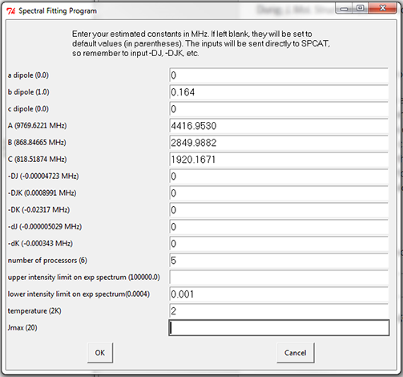

Tutorial: 1,3-Disilacyclopentane¶
Introduction¶
For the purposes of a guided tutorial to using the GUI-less, standalone Autofit, in this case prog_A_v15.py, we will use some previously published data taken at the Pate lab to illustrate the techniques and capabilities of Autofit.
Specifically, we will analyze the spectrum of 1,3-disilacyclopentane to find the parent species and its silicon and carbon isotopologues using Autofit. This molecule makes an excellent candidate for learning Autofit, as the parent species spectrum is sufficiently intense and the number of triples for Autofit to check due to spectral density is relatively low. In addition, the ab initio predictions are fairly accurate, allowing for small search windows and thus quick searches.
If you would like to read specifics regarding this molecule, a paper has been published this year regarding the FT microwave data presented here, as well as IR data taken by the Durig group at UKMC.
Citation: G. A. Guirgis, J. J. Klaassen, B. H. Pate, N. A. Seifert, I. D. Darkhalil, B. S. Deodhar, J. K. Wyatt, H. W. Dukes, M. Kruger, J. R. Durig; J. Mol. Struct. 1049, 400-408 (2013).
Required Stuff¶
For the purposes of following along with this tutorial, you will need these supplementary files:
- For this exercise, we will use prog_A_vX.py, where X is at least 15. If you don’t have this, go back to the Introduction to Autofit and follow those instructions.
- Experimental data; this data was taken in 2012 in the Pate lab using the 6-18 GHz spectrometer at UVa. More information can be found in the paper cited above.
- Optimized geometry; this geometry was optimized in GAUSSIAN 09 using the MP2/6-311++g(d,p) geometry. It is in the XYZ format, which is standard for any Autofit geometry input. This geometry is required for scaling rotational constants for the purpose of finding isotopologues.
Step 1: Input¶
Start Autofit by executing the script inside of your bash shell:
python prog_A_v15.py
If all loads properly, you should get a dialog box that looks like this:

Notice there are two choices. The first, entitled Normal Species, is the Autofit routine for the purpose of finding a species or a set of species using a single autofit scan. You can kind of consider this “Classic” mode. The other is for when you have an experimentally fit parent species and you want autofit to find its isotopologues. In reality, if you run a normal species autofit session, the program will ask you at the end if you want to search for isotopologues for a given species, so we’ll just go ahead and click Normal Species.
Now, go back to the bash shell. You should get a message that says:
Would you like to use an input file? (1/0)
During an Autofit run (later on in the setup stage), the program will generate an input file. If you have an input file, say from a botched run from earlier that you want to retry, hit 1. For the purposes of this tutorial, type 0 and hit ENTER.
Next, a dialog box will appear asking you to enter a job name. Give it a unique name, as Autofit will create a folder with this job name and will not work unless the folder is unique. If you want to use an already used job name, close out of the Python script and delete the folder and rerun the script. It should let you use that job name again.
Next, the primary input screen will appear. Most of these are self-explanatory, but below you can find an image with all the necessary things filled out. The values in this image are taken from the ab initio results given from a single point calculation of the geometry downloadable above.
Some notes about this image:
- The values in parenthesis next to the row descriptors (e.g. the (9769.6221 MHz) next to A) are default values. If you leave the entry box for this parameter empty, the program will default to it. Currently the program is defaulted to a particular conformer of hexanal, so make sure to fill in everything!
- As stated in Introduction to Autofit, distortion is treated as a static set of parameters, so you can feel free to add predicted distortion constants from a frequency calculation, or just set them to 0 (typical practice is just to set them to 0, but of course it depends on your confidence in the predicted quantities)
- Dipole values are only used to rank transitions based on intensity (coupled with temperature) so if you have a molecule with one experimentally-detectable dipole direction, then it will work fine to set the dipole to 1 and the others to 0.
- The number of processors entry tells the system how many cores you want to run your search on. This count includes hyperthreading, so for example if you have a 4-core Intel Core i7 series CPU with hyperthreading, you can set this from 1-8.
- The upper intensity limit for a full spectrum scan doesn’t matter too much (it might be important when you have a dense spectrum and you want to constrain your peakpick), so I set it to default. However, it is important to fix a good lower intensity limit, so Autofit doesn’t end up fitting noise. A good setting for this spectrum is 1 microvolt, or 0.001.
After everything is filled out and you hit OK, the program will now ask you to import a spectrum file. Point it to the experimental spectrum downloadable above, and hit OK. Autofit will seem like it’s not doing anything, but in fact it is generating a peakpick file from the data automatically, using the intensity bounds you input in the previous screen. This peakpick is done using a cubic spline, which gives a frequency resolution better than the point spacing of the FT. Splining the data will tend to improve your overall RMS errors on fit species.
Step 2: The Art of Picking Triples¶
Once it finishes splining, another box will popup that looks like this: